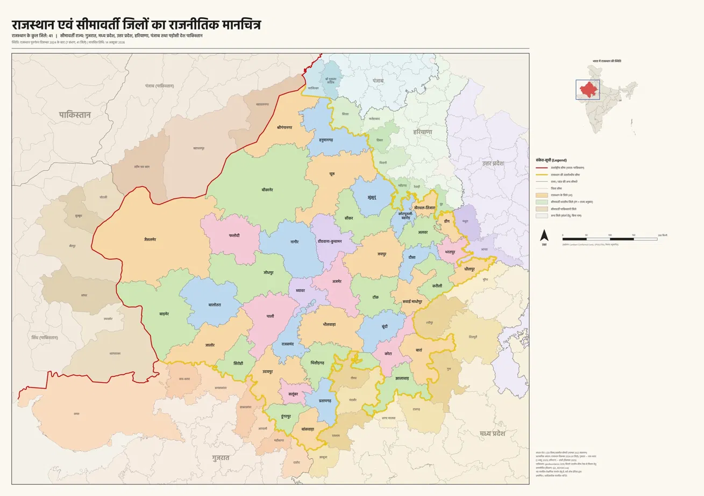

Rajasthan Border District Atlas — preview
GIS-derived atlas preview, with Hindi labels and highlighted boundaries. Not official/final; review the linked source and discrepancy reports.
Needs verificationBrowse Rajasthan map previews and original full-size exports, plus boundary tables, source registers and QA. Both geography source folders remain separate and unchanged.
Map cards and metadata load from the checked-in catalogue; direct static preview and detail links are available below.
GIS-derived atlas preview, with Hindi labels and highlighted boundaries. Not official/final; review the linked source and discrepancy reports.
Needs verification
A separate reference image with a separate audit trail. It is not a replacement for the atlas preview and is not a validated final map.
Reference only · not finalOpen the subject landing page for the border-district list and table. Full-size PNG actions stay in this tab so browser Back returns to the catalogue.
Map preview, border district names, summary table, metadata links and audit warnings.
Open Rajasthan Geography →Original boundary relations, border-only district list, neighbour summary and cross-check data.
Browse CSVs and metadata →Two source registers and separate audit trails; read the discrepancies before relying on any boundary claim.
Read source/QA reports →